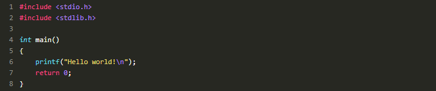
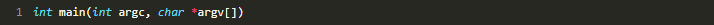
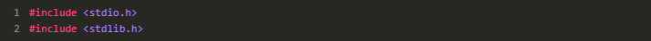
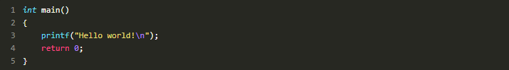
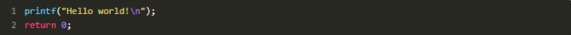
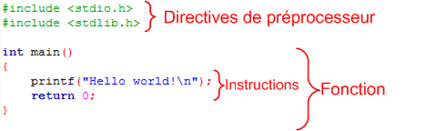

Chapitre 2 : Votre premier programme
un minimum de code
Pour n'importe quel programme, il faudra taper un minimum de code. Ce code ne fera rien de particulier mais il est indispensable.
C'est ce « code minimum » que nous allons découvrir maintenant. Il devrait servir de base pour la plupart de vos programmes en langage C.
Demandez le code minimal à votre IDE
Selon l'IDE que vous avez choisi dans le chapitre précédent, la méthode pour créer un nouveau projet n'est pas la même. Reportez-vous à ce chapitre si vous avez oublié comment faire.
Pour rappel, sous Code::Blocks (qui est l'IDE que je vais utiliser tout au long de ce cours), il faut aller dans le menuFile / New / Project, puis choisirConsole Applicationet sélectionner le langage C.
Code::Blocks a donc généré le minimum de code en langage C dont on a besoin. Le voici :
Notez que la ligne :

… peut aussi s'écrire :
Les deux écritures sont possibles, mais la seconde (la compliquée) est la plus courante. J'aurai donc tendance à utiliser plutôt cette dernière dans les prochains chapitres.
En ce qui nous concerne, que l'on utilise l'une ou l'autre des écritures, ça ne changera rien pour nous. Inutile donc de s'y attarder, surtout que nous n'avons pas encore le niveau pour analyser ce que ça signifie.
Si vous êtes sous un autre IDE, copiez ce code source dans votre fichier main.c pour que nous ayons le même code vous et moi.
Enregistrez le tout. Oui je sais, on n'a encore rien fait, mais enregistrez quand même, c'est une bonne habitude à prendre. Normalement, vous n'avez qu'un seul fichier source appelé main.c (le reste, ce sont des fichiers de projet générés par votre IDE).
Analysons le code minimal
Ce code minimal qu'on vient de voir n'est rien d'autre que du chinois pour vous, j'imagine. Et pourtant, moi je vois là un programme console qui affiche un message à l'écran.
Il va falloir apprendre à lire tout ça !
Commençons par les deux premières lignes qui se ressemblent beaucoup :
Ce sont des lignes spéciales que l'on ne voit qu'en haut des fichiers source. Ces lignes sont facilement reconnaissables car elles commencent par un dièse " # ". Ces lignes spéciales, on les appelle directives de préprocesseur (un nom compliqué, n'est-ce pas ?). Ce sont des lignes qui seront lues par un programme appelé préprocesseur, un programme qui se lance au début de la compilation.
Oui : comme je vous l'ai dit plus tôt, ce qu'on a vu au début n'était qu'un schéma très simplifié de la compilation. Il se passe en réalité plusieurs choses pendant une compilation. On les détaillera plus tard : pour le moment, vous avez juste besoin d'insérer ces lignes en haut de chacun de vos fichiers.
Le motincludeen anglais signifie « inclure » en français. Ces lignes demandent d'inclure des fichiers au projet, c'est-à-dire d'ajouter des fichiers pour la compilation.
Il y a deux lignes, donc deux fichiers inclus. Ces fichiers s'appellentstdio.hetstdlib.h. Ces fichiers existent déjà, des fichiers source tout prêts. On verra plus tard qu'on les appelle des bibliothèques (certains parlent aussi de librairies mais c'est un anglicisme). En gros, ces fichiers contiennent du code tout prêt qui permet d'afficher du texte à l'écran.
Sans ces fichiers, écrire du texte à l'écran aurait été mission impossible. L'ordinateur à la base ne sait rien faire, il faut tout lui dire. Vous voyez la galère dans laquelle on est !
Bref, en résumé les deux premières lignes incluent les bibliothèques qui vont nous permettre (entre autres) d'afficher du texte à l'écran assez « facilement ».
Passons à la suite. La suite, c'est tout ça :
Ce que vous voyez là, c'est ce qu'on appelle une fonction. Un programme en langage C est constitué de fonctions, il ne contient quasiment que ça. Pour le moment, notre programme ne contient donc qu'une seule fonction.
Une fonction permet grosso modo de rassembler plusieurs commandes à l'ordinateur. Regroupées dans une fonction, les commandes permettent de faire quelque chose de précis. Par exemple, on peut créer une fonction ouvrir_fichier qui contiendra une suite d'instructions pour l'ordinateur lui expliquant comment ouvrir un fichier.
L'avantage, c'est qu'une fois la fonction écrite, vous n'aurez plus qu'à dire ouvrir_fichier, et votre ordinateur saura comment faire sans que vous ayez à tout répéter !
Sans rentrer dans les détails de la construction d'une fonction (il est trop tôt, on reparlera des fonctions plus tard), analysons quand même ses grandes parties. La première ligne contient le nom de la fonction, c'est le deuxième mot.
Oui : notre fonction s'appelle donc main. C'est un nom de fonction particulier qui signifie « principal » .main est la fonction principale de votre programme, c'est toujours par la fonction main que le programme commence.
Une fonction a un début et une fin, délimités par des accolades {et}. Toute la fonction main se trouve donc entre ces accolades. Si vous avez bien suivi, notre fonctionmaincontient deux lignes :
Ces lignes à l'intérieur d'une fonction ont un nom. On les appelle instructions (ça en fait du vocabulaire qu'il va falloir retenir).
Chaque instruction est une commande à l'ordinateur. Chacune de ces lignes demande à l'ordinateur de faire quelque chose de précis.
Comme je vous l'ai dit un peu plus haut, en regroupant intelligemment (c'est le travail du programmeur) les instructions dans des fonctions, on crée si on veut des « bouts de programmes tout prêts ». En utilisant les bonnes instructions, rien ne nous empêcherait donc de créer une fonction ouvrir_fichier comme je vous l'ai expliqué tout à l'heure, ou encore une fonction avancer_personnage dans un jeu vidéo, par exemple.
Un programme, ce n'est au bout du compte rien d'autre qu'une série d'instructions : « fais ceci », « fais cela ». Vous donnez des ordres à votre ordinateur et il les exécute. Du moins si vous l'avez bien dressé.
La première ligne : printf("Hello world!\n"); demande à afficher le message « Hello world! » à l'écran. Quand votre programme arrivera à cette ligne, il va donc afficher un message à l'écran, puis passer à l'instruction suivante.
Passons à l'instruction suivante justement : return 0;
Eh bien ça, en gros, ça veut dire que c'est fini (eh oui, déjà). Cette ligne indique qu'on arrive à la fin de notre fonction main et demande de renvoyer la valeur 0.
En fait, chaque programme une fois terminé renvoie une valeur, par exemple pour dire que tout s'est bien passé. En pratique, 0 signifie « tout s'est bien passé » et n'importe quelle autre valeur signifie « erreur ». La plupart du temps, cette valeur n'est pas vraiment utilisée, mais il faut quand même en renvoyer une.
Votre programme aurait marché sans le return0, mais on va dire que c'est plus propre et plus sérieux de le mettre, donc on le met.
Et voilà ! On vient de détailler un peu le fonctionnement du code minimal.
Certes, on n'a pas vraiment tout vu en profondeur, et vous devez avoir quelques questions en suspens. Soyez rassurés : toutes vos questions trouveront une réponse petit à petit. Je ne peux pas tout vous divulguer d'un coup, cela ferait trop de choses à assimiler.
Vous suivez toujours ? Si tel n'est pas le cas, rien ne presse. Ne vous forcez pas à lire la suite. Faites une pause et relisez ce début de chapitre à tête reposée. Tout ce que je viens de vous apprendre est fondamental, surtout si vous voulez être sûrs de pouvoir suivre après.
Tenez : comme je suis de bonne humeur, je vous fais un schéma qui récapitule le vocabulaire qu'on vient d'apprendre (fig. suivante).
Testons notre programme
Tester devrait aller vite. Tout ce que vous avez à faire c'est compiler le projet, puis l'exécuter (cliquez sur l'icône Build & Run sous Code::Blocks).
Si vous ne l'avez pas encore fait, on vous demandera d'enregistrer les fichiers. Faites-le.
Après un temps d'attente insupportable (la compilation), votre premier programme va apparaître sous vos yeux totalement envahis de bonheur (fig. suivante).

Le programme affiche « Hello world! » (sur la première ligne).Les lignes en dessous ont été générées par Code::Blocks et indiquent que le programme s'est bien exécuté et combien de temps s'est écoulé depuis le lancement.
On vous invite à appuyer sur n'importe quelle touche du clavier pour fermer la fenêtre. Votre programme s'arrête alors. Oui je sais, ce n'est pas transcendant. Mais bon, quand même ! C'est un premier programme, un instant dont vous vous souviendrez toute votre vie ! … Non ?
On a préparé le terrain jusqu'ici, maintenant il serait bien de commencer à programmer un peu, qu'en dites-vous ? C'est justement l'objectif de ce chapitre ! À la fin de celui-ci, vous aurez réussi à créer votre premier programme !
Bon d'accord, ce programme sera en noir et blanc et ne saura que vous dire bonjour, il semblera donc complètement inutile mais ce sera votre premier ; je peux vous assurer que vous en serez fiers.